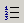

De genummerde lijst optie is zeer vergelijkbaar met de opsomminstekens.
Deze optie is beschikbaar door t eklikken op de genummerde lijst knop
op de werkbalk. KTML3 zal een nummer invoegen in oplopende volgorde,
en plaats dit voor elke geselecteerde paragraaf. Indien aan het einde
van een genummerde paragraaf de knop Genummerde Lijst wordt geklikt,
begint KTML3 een nieuwe genummerde paragraaf.
Notitie: Allen in Mozilla, wanneer een genummerde
lijst aan elke aparte paragraaf wordt toegewezen, in plaats van het toewijzen
via een selectie van verschillende paragrafen tegelijk, zal de nummering
worden gereset; met andere woorden elke paragraaf zal nummer 1 krijgen.
Na het toepassen van een genummerde lijst, zal de corresponderende knop actief blijven totdat de lijst niet geselecteerd is. Om te controleren of de genummerde lijst actief is of niet, plaatst u de muis aanwijzer binnen de corresponderende paragraaf.
Om de genummerde lijst te deactiveren, kliikt u op de genummerde lijst
op de werkbalk.
Wanneer u uw cursor binnen een enkele paragraaf plaatst en u kiest voor
het deactiveren van de genummerde lijst, zal die paragraaf geen nummer
ervoor behouden; een nieuwe lijst zal daar direct onder worden aangevangen.
Hierdoor zal de nummering worden gereset, en is het eerst volgende paragraaf
nummer 1.
Wanneer op de Tab toets wordt gedrukt terwijl de cursor binnen een paragraaf staat, zal de paragraaf inspringen, en het nummer zal in 1 veranderen. Het nummer van de volgende paragraaf wordt verminderd met 1. Op deze manier kunt u genestelde lijsten creeren. Wanneer de Tab toest ingedrukt wordt terwijl verschillende paragrafen geselecteerd zijn, zullen deze inspringen, echter de nummers zullen niet wijzigen.